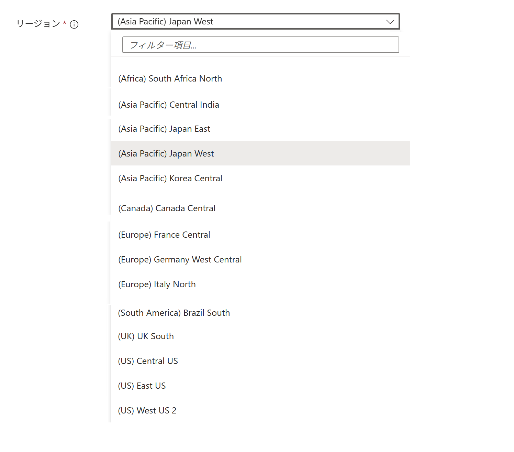
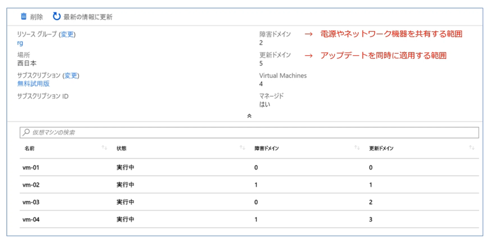

Azure グローバル基盤

geo ＞ リージョン


リージョン ＞ ゾーン
リージョン：通常 3つのゾーンがあります（可用性ゾーンをサポートするリージョンの場合）

ゾーン ＞ データセンター
ゾーン＝可用性ゾーン：リージョンの中にある、物理的に独立した区画の1つ。1つ以上のデータセンターで構成。

ラック ＞ サーバ
ラック＝サーバラック
サーバ＝ラックマウントサーバ

サーバ ＞ 仮想マシン
仮想マシンは、物理マシン上にソフトウェアで作られるコンピューターです。
物理マシンの CPU やメモリなどを割り振って動作し、実物のコンピューターのように利用できます。
物理マシンの資源を共有して動作するため、1台の物理マシン上に複数の仮想マシンを作成できます。

可用性セット
可用性セットは、仮想マシンを一つのデータセンター内で分散配置し、可用性を高めるための仕組みです。
可用性セットは、障害ドメインと更新ドメインという2つの考え方で構成されます。
- 障害ドメイン：物理的なグループ
- 更新ドメイン：論理的なグループ
- サーバラックの電源やネットワークに障害が発生しても、物理的に別々のサーバラックに仮想マシンを分散配置していれば、可用性セットの仮想マシンがすべて同時に停止することを避けられます（障害ドメイン）。
- Azure側がOSのアップデートなどでサーバを更新しても、更新のタイミングが違うグループに仮想マシンを分散配置していれば、可用性セットの仮想マシンがすべて同時に再起動することを避けられます（更新ドメイン）。
仮想マシン 4台 を 可用性セットに配置した際に、それぞれの仮想マシンが 障害ドメイン と 更新ドメイン にどのように分散配置されるかの例を下記に示します。

 ※ 以前のAzureではOSやホストの更新時に再起動が必須でしたが、現在 Azureのプラットフォーム更新の多くは再起動を伴わずに実行されます。
※ 以前のAzureではOSやホストの更新時に再起動が必須でしたが、現在 Azureのプラットフォーム更新の多くは再起動を伴わずに実行されます。